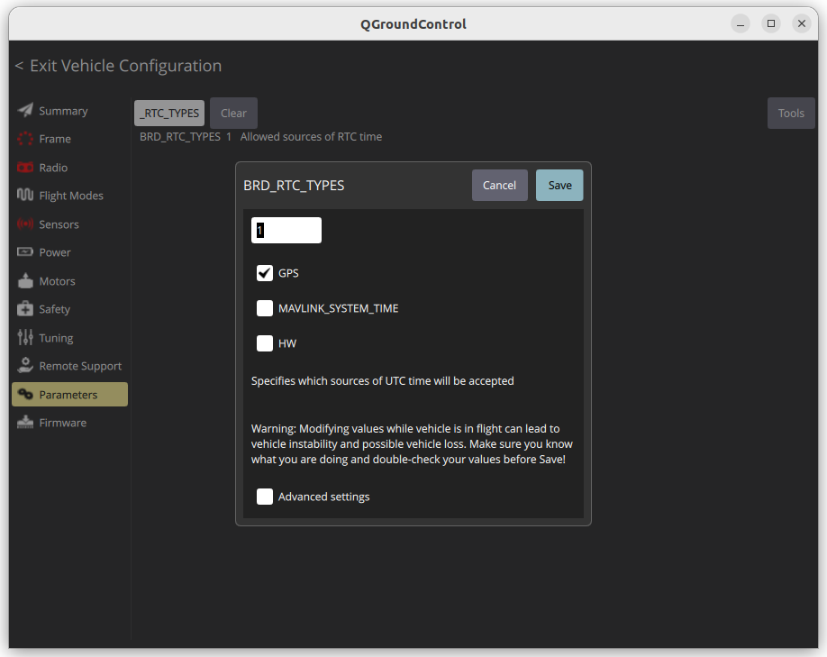

Clock/Time Synchronisation
ROS / ros eco / packages / mavros
The flight controller and companion computer clocks can be synchronised using MAVLink’s SYSTEM_TIME and TIMESYNC messages. This is important so that each side can blend data from the other side into its EKF.
SYSTEM_TIME (2)
The system time is the time of the master clock. The message send both way and the master clock set by BRD_RTC_TYPES in ardupilot
| Field Name | Type | Description |
|---|---|---|
time_unix_usec |
uint64_t |
Unix time in microseconds (UTC). 0 if unknown. |
time_boot_ms |
uint32_t |
Time since system boot in milliseconds. Starts at 0 on every system reset. |
Autopilots (e.g., PX4, ArduPilot) may set time_unix_usec based on GPS time once available .
The message publish by the fcu if no gps the time_unix_usec are zero (1/1/1970)
TM: Wrong FCU time.
if pixhawk has no time source like gps, and his unix data < Sat Feb 14 02:31:30 MSK 2009 mavros not publish SYSTEM_TIME to topic /mavros/time_reference and we got [WARN] [] [mavros.time]: TM: Wrong FCU time.
BRD_RTC_TYPES parameter
In Ardupilot we can control the time source using BRD_RTC_TYPES parameter

- GPS (0): Time init from GPS
- MAVLINK_SYSTEM_TIME(1): for example mavros send system time implement from sys_time plugin the rate control by
system_time_rate0 disabled sending - HW(2): Using external hardware like
DS3231orRV3028there is no driver implementation, i read about LUA driver implementation
TIMESYNC (111)
The MAVLink TIMESYNC message is used to synchronize time between two systems — typically between a companion computer and an autopilot (FCU) like Pixhawk.
| Field | Description |
|---|---|
tc1 |
Remote system’s time in microseconds |
ts1 |
Local system’s time in microseconds |
Sync sequence
sequenceDiagram
participant Companion
participant FCU
Note right of Companion: Companion initiates timesync
Companion->>FCU: TIMESYNC (tc1 = 0, ts1 = T_local_send)
Note right of FCU: FCU receives and replies with its own time
FCU-->>Companion: TIMESYNC (tc1 = T_fcu_now, ts1 = T_local_send)
Note right of Companion: Companion receives response
Note right of Companion: Computes RTT = T_local_recv - ts1
Note right of Companion: Computes offset = tc1 + RTT/2 - T_local_recv
Note over Companion, FCU: Repeat periodically to refine offset
pymavlink code example
demo code
MAVROS
Parameters
| name | default | description |
|---|---|---|
| time_ref_source | fcu | just a string for source filed in sensor_msgs::msg::TimeReference message (SYSTEM_TIME) |
| timesync_mode | mavlink | - none, passthrough, mavlink, onboard |
| system_time_rate | 0.0 (disabled) | send SYSTEM_TIME rate from CC to FCU |
| timesync_rate | 0.0 (disabled) | send timesync rate , sync mode control by timesync_mode |
timesync_mode
- mavlink: Send time sync request tc1=0, tc2=CC time
- onboard: Run time sync on board (TODO: explain more)